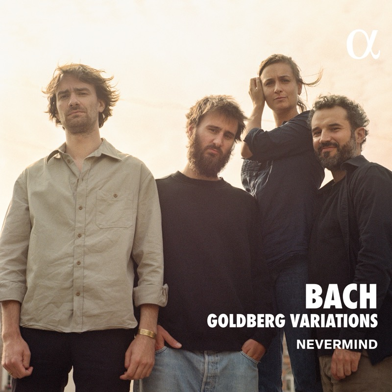

J. S. Bach: Goldberg Variations 哥德堡变奏曲（古乐室内乐版）
Anna Besson, flute · Louis Creac'h, violin · Robin Pharo, viola da gamba · Jean Rondeau, harpsichord & organ
听熟了古尔德 1981 年的版本之后，去找《哥德堡变奏曲》的其他录音，找到了这一版。法国古乐团体 Nevermind 用长笛、小提琴、古大提琴和羽管键琴（部分用管风琴）来演奏这部原本写给键盘的作品。这样一来，钢琴那种颗粒分明的节奏感没有了，整体更平缓，乐曲有了新的质感，韵律和节奏却依然井然有序。每件乐器接过原曲复调里的一个声部，一段段变奏像是被重新照亮。
Tracks
- 01Aria4:32
开篇的 Aria 交给长笛来唱，带出一种羽管键琴给不了的温柔和脆弱。
- 02Var. I a 1 Clav.2:11
- 03Var. II a 1 Clav.2:05
- 04Var. III. Canone all’Unisuono. a 1 Clav.2:14
- 05Var. IV a 1 Clav.1:20
- 06Var. V a 1 ô vero 2 Clav.1:45
- 07Var. VI. Canone alla Seconda. a 1 Clav.2:40
- 08Var. VII a 1 ô vero 2 Clav. al tempo di Giga1:51
- 09Var. VIII a 2 Clav.3:21
- 10Var. IX. Canone alla Terza. a 1 Clav.2:52
- 11Var. X. Fughetta. a 1 Clav.1:33
- 12Var. XI a 2 Clav.2:08
- 13Var. XII a 1 Clav. Canone alla Quarta. a 1 Clav. in moto contrario4:41
- 14Var. XIII a 2 Clav.7:27
- 15Var. XIV a 2 Clav.2:19
- 16Var. XV. Canone alla Quinta. a 1 Clav.: Andante6:03
- 17Var. XVI. Ouverture. a 1 Clav.2:57
- 18Var. XVII a 2 Clav.3:42
- 19Var. XVIII. Canone alla Sesta. a 1 Clav.2:25
- 20Var. XIX a 1 Clav.1:17
- 21Var. XX a 2 Clav.2:40
- 22Var. XXI. Canone alla Settima. a 1 Clav.3:20
- 23Var. XXII a 1 Clav. alla breve1:33
- 24Var. XXIII a 2 Clav.2:33
- 25Var. XXIV. Canone all’Ottava. a 1 Clav.2:48
- 26Var. XXV a 2 Clav.: Adagio9:19
- 27Var. XXVI a 2 Clav.2:30
- 28Var. XXVII. Canone alla Nona. a 2 Clav.2:03
- 29Var. XXVIII a 2 Clav.2:00
- 30Var. XXIX a 1 ô vero 2 Clav.2:32
- 31Var. XXX. Quodlibet. a 1 Clav.2:18
- 32Aria da Capo5:13
Credits
- Johann Sebastian Bach — composer
- Robin Pharo & Jean Rondeau — arrangement
- Anna Besson — flute
- Louis Creac'h — violin
- Robin Pharo — viola da gamba
- Jean Rondeau — harpsichord, organ
Notes
Nevermind 与这版改编
Nevermind 是 2013 年在法国成立的古乐四重奏：长笛 Anna Besson、小提琴 Louis Creac'h、古大提琴 Robin Pharo、羽管键琴 Jean Rondeau。这版《哥德堡变奏曲》由 Robin Pharo 和 Jean Rondeau 主导改编，2025 年 2 月由 Alpha Classics 发行，两张 CD，将近一百分钟。它没有把变奏当作键盘独奏练习来处理，而是写成了带通奏低音的巴洛克室内乐：古大提琴和羽管键琴打底，古大提琴时不时离开低音线独奏一段；长笛和小提琴在上面唱旋律，加上独奏键盘做不到的装饰。
从对位里开出的花园
原作的复调织体里本来就藏着几条同时进行的线，这版改编把每条线交给一件乐器，每条旋律都有了那件乐器特有的美感。听起来像一组 18 世纪风格的室内乐，各段变奏之间有对话，也有音色的对比。有乐评把这张唱片形容为一座音乐色彩的花园。它也说明巴赫这部作品有多大的可塑性：换一套乐器，情感的广度和结构的深度都还在。
同一首曲子，三种走法
这张和另外两张 MD 录的是同一部作品：巴赫的《哥德堡变奏曲》，一段 Aria 主题、30 段变奏，最后 Aria 原样再奏一遍。从宁静的开头出发，穿过轻快、悲怆、复杂的对位和炫技，最后回到起点，像走完一段心灵旅程。三个版本走法不同：古尔德 1981 年的钢琴独奏，把结构的纯粹和演奏者内心的独白放到最前面；Jacques Loussier Trio 的爵士三重奏，给熟悉的旋律加上新的律动和即兴的惊喜，充满活力；Nevermind 的古乐四重奏，让长笛、小提琴、古大提琴和键盘各自接过一个声部，摆脱了钢琴的节奏感，更平缓，像在 18 世纪的沙龙里听一场对话。先把古尔德听熟，再去听另外两版，每次都能听出新的细节。